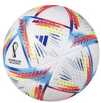
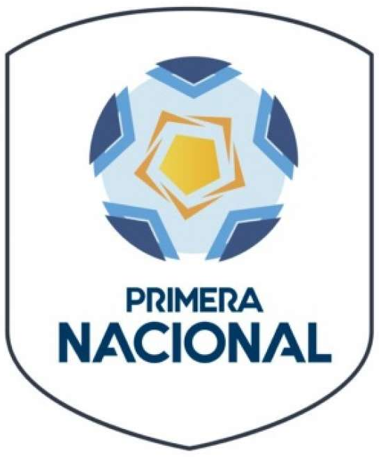
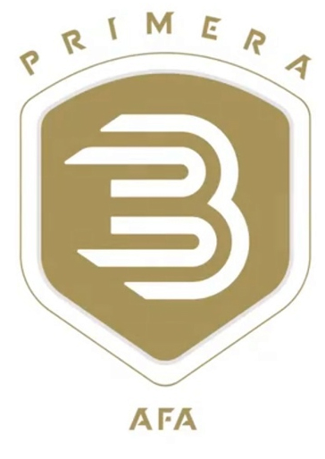
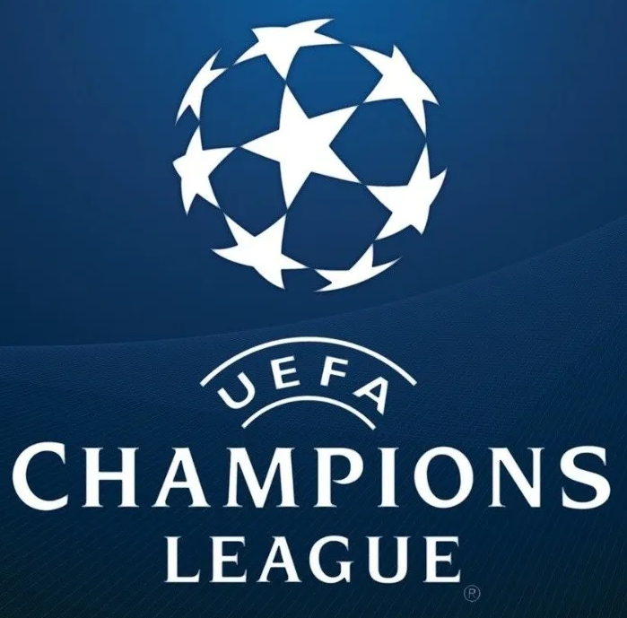

<nav class="navbar navbar-expand-lg bg-body-tertiary r">
    <div class="container-fluid">
        <button class="navbar-toggler" type="button" data-bs-toggle="collapse" data-bs-target="#navbarSupportedContent"
            aria-controls="navbarSupportedContent" aria-expanded="false" aria-label="Toggle navigation">
            <span class="navbar-toggler-icon"></span>
        </button>
        <div class="collapse navbar-collapse" id="navbarSupportedContent">
            <ul class="navbar-nav me-auto mb-2 mb-lg-0 mx-auto">
                <li class="nav-item">
                    <a class="nav-link btn-outline-primary" aria-current="page" href=""> Inicio </a>
                </li>
                <li class="nav-item">
                    <a class="nav-link" aria-current="page" href="primera">  Primera A </a>
                </li>
                <li class="nav-item">
                    <a class="nav-link" href="nacional">  Nacional B  </a>
                </li>
                <li class="nav-item">
                    <a class="nav-link" href="bmetro">   Primera B </a>
                </li>
                <li class="nav-item">
                    <a class="nav-link" href="libertadores">   Libertadores</a>
                </li>
                <li class="nav-item">
                    <a class="nav-link" href="championsleague">  Champions League</a>
                </li>
            </ul>
        </div>
    </div>
</nav>